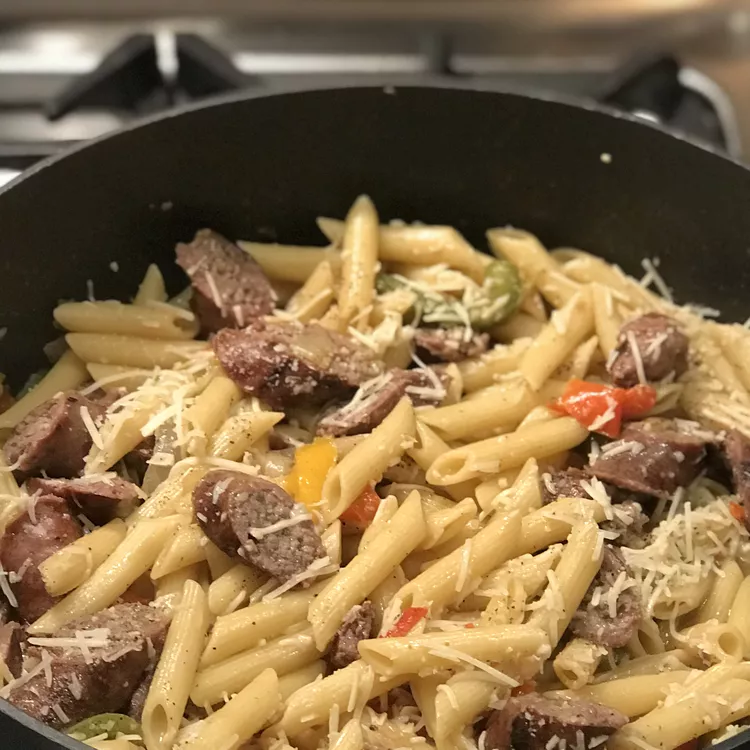

Home
Bow Tie Pasta with Sausage and Sweet Peppers

This is a yummy pasta dish with sausage and peppers that is super fast to put together. My husband loves this dish! This is great with a tossed salad. Enjoy!
Ingredients
- 1 pound Italian sausage, cut into 1/2 inch pieces
- 2 green bell peppers, chopped
- 8 ounces farfalle pasta
- ½ cup beef broth
- ¼ teaspoon ground black pepper
Steps
- Bring a large pot of lightly salted water to a boil. Add pasta and cook for 8 to 10 minutes or until al dente; drain.
- While pasta is cooking, cook sausage and peppers in a large skillet over medium heat until sausage is brown and juices run clear. Drain sausage mixture and return it to the pan. Pour in broth, season with pepper, and bring to a boil.
- Toss pasta with sausage mixture and serve.